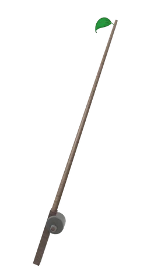
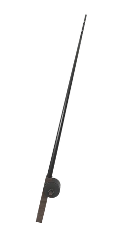
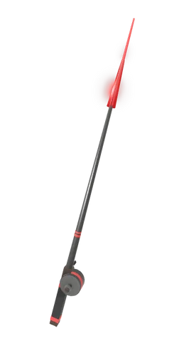
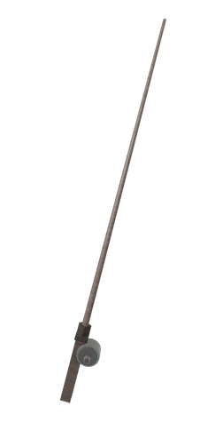
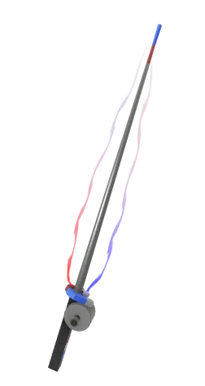

Привіт, я Данила
Я студент групи ІН-42/2. Мені подобається грати в ігри та дізнаватися, як їх створювати. Це мій персональний довідник інструментів для гри Fisch. Тут я збираю інформацію про вудки, щоб ефективніше ловити рідкісних риб.
Fisch: Енциклопедія Рибалки
Автор проєкту: Милка Данила, студент групи ІН-42/2
Я студент групи ІН-42/2. Мені подобається грати в ігри та дізнаватися, як їх створювати. Це мій персональний довідник інструментів для гри Fisch. Тут я збираю інформацію про вудки, щоб ефективніше ловити рідкісних риб.

Базова вудка, яку видають на початку гри. Має дуже слабкі характеристики, але ідеальна для перших кроків.

Надійна вуглецева вудка з гарним балансом швидкості та міцності волосіні.

Дозволяє витягувати рибу набагато швидше, але потребує гарної реакції гравця.

Закидає наживку набагато далі за інші вудки, що дозволяє ловити глибоководну рибу з берега.

Унікальна вудка, яка значно підвищує шанс виловити ящики, ключі та інший лут замість риби.

Одна з найдорожчих вудок у грі. Має величезний показник удачі (Luck), що дозволяє ловити міфічних риб.